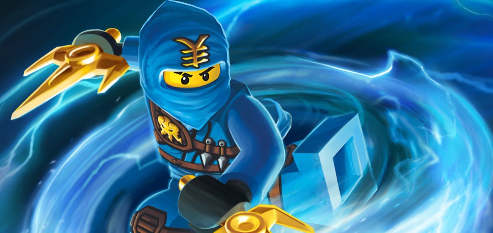
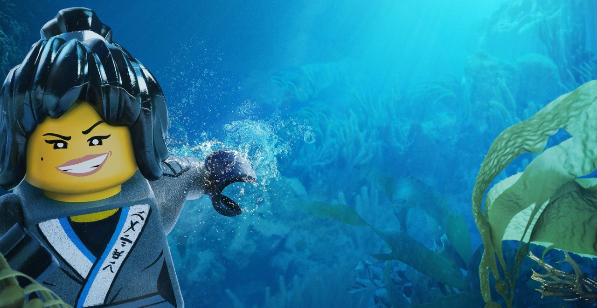

My name is Atakhan Ahmedov, I'm 17 years old and my major is Computer Science. I'm interested in studying computer languages and programs. I like to read the biographies of famous people to study historical events and see what their education and the way to success is like. I love sport, especially swimming, I went to judo, MMA, and chess classes. So far, I have the second grade in chess, and I hope that I will get the first, and then the master's degree. I also like to draw with pens and acrylic colors. Besides, I hope to learn to play the piano and the guitar. I'm very fond of traveling!
Code Academy Profile My full name is Sofiya Hasanzade. I was born on January 12, 2002 in Baku. I am currently a 1st year student at the Faculty of Computer Science at ADA University. When I have free time from university classes, I love to listen to music, watch movies and especially read books. Psychological and classical books, jazz songs, science fiction and history movies are my favorites. I do sports every day and go swimming in the summer. I cook and play the violin to relieve stress. I went to primary school number 83, when my first teacher, Khatira, was one of the most memorable people, and it was my favorite years.I don't think I'm the only one who thinks that. How can I forget the years when I first read the book and learned to read and write?After the 4th grade, a new period began for me. The lyceum period, where the "chosen ones" had to do their best. I went to middle school at the Young Talents lyceum, and high school to the Lyceum named after Academic Zarifa Aliyeva. In high school I planned to go to abroad, or ADA University. My last choice was ADA University and I do not regret for that. Additionally I finished the music school named after L.M. Rastropovich, on violin sector.
Code Academy Profile I’m Manaf, and I was born in Baku, on 6th September of 2002. I had been living in Old Yasamal for 5 years. I had been gone to Kindergarten No. 17 on Yasamal for 3 years. When I was 5, we went to Jeyranbatan to live there and we have been living there since 2007. I started my primary education on Jeyranbatan No 2 public school, and I had been studied there for 4 years. During that time I had been going to House of culture. After I completed my primary education, I registered to study at the Sumgayit city Gymnasium of Natural Sciences and got a high result in the exam and started studying there. I have graduated from there with high grades. I have been studying on ADA University since 2019 and I am glad to be here.
Code Academy ProfileOn December 11, 2020, we, the students of #ADAUniversity Faculty of Information Technologies and Computer Sciences, Atakhan Ahmadbey, Manaf Aghazada, and Sabuhi Bashirov organized a lesson called #HourofCode at school No.11 in Sumgayit. This lesson was attended by 23 students of the 5th and 8th grades. Each of us carefully prepared and tried very hard to make the lesson interesting. At the end of the lesson, we presented the children with certificates to please them. The purpose of the #HourofCode event is to acquaint the young generation of the whole world with the IT sphere, show its business prospects and advantages, and also teach schoolchildren to write code on their own.
Our website is called Ninjago. This name is taken from a cartoon that all three of us have known for a long time. We decided to take this name in view of the fact that the characters of this cartoon are represented by the Lego constructor, which is associated with the Robotics Project. Taking a look at the content of the site, you can see brief information about the members of our group, the previously held Hour of Code and Robotics Project. We encountered some difficulties while creating the site. At first we thought that we should complete the Codecademy courses and then start creating a site, but it was not as easy as it seemed before. After completing the course, it turned out to be a problem for us how to apply this knowledge. Therefore, we used YouTube channels, and thanks to them, we got ideas on how to create our website. At the same time, there was some controversy between the members of the group, as a result of which we had to delete several sites we created, and after that, we finally came to a unanimous opinion on the current version of our site. Hopefully, in the future, when we become professional web developers, we will have better, more useful and interesting projects.
The robot we intend to develop is the prototype of robots used at Amazon that help employees perform their many daily tasks. These robots take packages from their places and in the shortest time with high accuracy deliver them to their destination. In this way, they help in a few seconds to complete the work in which people would experience difficulties. These robots travel 3-4 miles per hour and can carry 750 pounds. They move along a coded route and circularly perform this work. LEGO(R) Mindstorms(R) EV3 robots that we are going to code are the 3rd generation of LEGO robots that can walk, talk, hold objects, throw them and perform other functions. To encode these robots EV3 Classroom App. v. 1.2.2 program is used. The main goal of this project is to develop students' abilities and logic, as well as to get them interested in the field of technology.